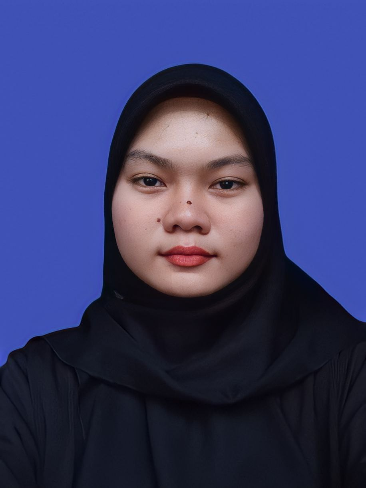

Welcome
Hello! I'm Nur Azieyana, a professional web designer with a passion for creating beautiful and functional websites. With over 5 years of experience, I specialize in HTML, CSS, and JavaScript to build responsive and user-friendly designs.
Explore my portfolio to see examples of my work, learn more about my background, or get in touch to discuss how I can help with your next project.
Key Skills:
- Web Design
- UI/UX Design
- Responsive Design
- Graphic Design